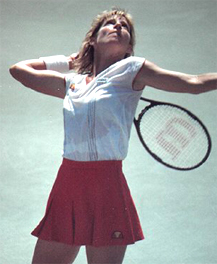
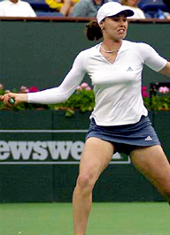
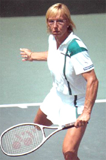
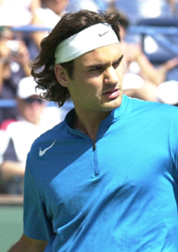
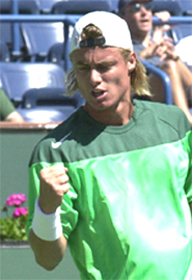
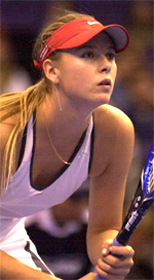

Previous: Women's Doubles and Your Doubles | 🏠 Strategy Home | (end of section)
Your Temperament and Your Tennis
Comprehensive unified tennis knowledge base — Fundamentals, Stroke Analysis, Reference Library, and more
Your Temperament and Your Tennis
Dexter Godbey
Is there a relationship between temperament and playing style?
Is there such a thing as your natural, God given temperament, and can understanding it help you play better tennis? I have no doubt the answer to both questions is yes. I have proved it in my own experience and my work with high level competitive players. In this article I'll show you how to do the same for yourself.
Many tennis players are trained to play in a style that actually conflicts with the fundamental nature of their personality. I know, because I was one of them. Once I understood my true temperament and adjusted my style of play accordingly, I immediately began to win more matches. Probably more important, I had a lot more fun playing the game.
The 4 Temperaments
People fall into four distinct categories of temperaments, in life and in tennis. Some people call these "personalities" or "styles," but I think "temperaments" is more accurate and more useful.
Of course, we all put on different faces in different circumstances, and everyone is to some extent a blend of all four temperaments. But your true or dominant temperament is inborn and innate. True temperament can't be faked. In tennis when the pressure's on, your temperament will dictate how you respond, no matter what you may think you should be doing. The more closely you are in tune with your true temperament, the more you'll enjoy what you're doing and the better you'll be at it.
Test your temperament and correlate it to your playing style.
Test Your Temperament
The two sets of questions below will allow you to test your own temperament. Pick which choice more closely describes you most of the time. Your choice doesn't mean you're always that way or that you're never the other way. Just select which, between the two, best describes you most of the time. You can print out the page if you like, and then check the boxes.
The first set of questions measures directness versus indirectness. This is how you deal with the outside world. There's no better or worse answer. It really doesn't matter for your tennis if you turn out to be more or less direct. In my estimation, Roger Federer is indirect in this category and he's number one in the world. So just answer honestly as opposed to how you may think you should or want to be. A good cross check is to ask a close friend or your significant other to fill in their assessment of you and see if they agree.
Indirect
Direct
1.
I Prefer to Avoid Risks
I Like To Take Risks
2.
I Make Cautious Decisions
I Make Quick Decisions
3.
I'm Not Particularly Assertive
I'm Confronting and Expressive
4.
I'm Easy Going and Patient
I Move Fast and I'm Impatient
5.
I'm a Good Listener and Ask Questions
I'm a Good Talker and Tell People What's On My Mind
6.
I'm More Reserved and Introverted
I'm More Outgoing and Extroverted
7.
I Tend To Keep My Opinions Private
I Share My Opinions Freely
Now count up the numbers on both sides. How many are "direct" and how many are "indirect" ? This determines the first half of your temperament type. If you chose more in the direct column, you are a "D". If you chose more in the indirect column, you're and "I."
Now answer the second set of questions. This set measures whether your personality is more "open" or "closed." This is how you relate to and express your emotions and feelings. Again, there is no right or wrong answer, or better or worse answer.
We judge Roger Federer to be "closed" on this scale so that makes the number player in the world is both indirect and closed. It has nothing to do with your ability to win matches. For what it's worth, I tested the same way. Answer honestly if you want your tennis and temperament in closer alignment.
Open
Closed
1.
I'm More Relaxed -- Warm
I'm More Formal -- Proper
2.
I Prefer Opinions
I Prefer Facts
3.
I'm Relationship Oriented
I'm Task Oriented
4.
I'm Comfortable Sharing My Feelings
I Tend To Keep My Feelings More Private
5.
I'm Flexible About Time
I'm Disciplined About Time
6.
I'm Oriented toward Feelings
I'm Oriented Toward Thinking
7.
I'm Spontaneous
I Prefer Planning



3 Women's champions and 3 different temperaments.
Again, count the answers. More "open" answers mean you are an "O." More "closed" answers means you are a "C."
Now put the two letters together to get your dominant temperament. There are 4 possible combinations: IO, IC, DO, or DC. We'll label each of the four possible temperaments with a color, because the colors are simpler to remember, although they have no deeper meaning.
IOINDIRECT & OPENYELLOW
DODIRECT & OPENBLUE
ICINDIRECT & CLOSEDGREEN
DCDIRECT & CLOSEDRED
Hrbaty: one of the few remaining Yellow players on the men's tour.
Tennis and Your Temperament
Now let's look at what each color represents. We'll list some of the traits for each temperament, and then what that means for your game and style of play. You will undoubtedly recognize yourself. You'll also recognize characteristics of your friends, family members, and fellow tennis players. By the way, the different temperaments aren't really new. They were documented by Hippocrates about 3,000 years ago. These basic differences have been tested and proven to be accurate for centuries. Remember, too, that we are all a blend of all the temperaments but with one true dominant temperament.
Yellow Temperament
Prevailing Wants: Stability, Consistency, Peace, TranquilityMotto: "I Do It The Simple Way."
Characteristics:
Calm, Cool, Collected
Low Key
Consistent
Patient
Deliberate
Slow and Steady
Easy Going
Stable
Loves:
Hates:
Consistency
Big Decisions
Peace
Changes
Stability
Conflict
Tranquility
Risk
Strengths:
Areas For Improvement:
A Relentless Bulldog
Lack Of Motivation
Consistent
Non-Confrontational
Good Under Pressure
Resistant to Change
Patient
Risk Adverse
The Yellow Playing Style
Yellow players are primarily counterpunchers. If you are a Yellow, you love consistency and do not like risks, hasty decisions, or major changes. Your temperament says play conservatively, without much risk, but to control play by imposing your style on your opponent. You build your game around your patience and consistency. You are a bulldog, and you don't mind a little pain in service of victory. Typically, you develop great defensive skills, the ability to retrieve, and to fight. You gradually wear down your opponents. You have the patience for it. The simplest way to win a match is to get the last ball back over the net. Often you can play this style with a smile.
Kim Clijsters has the Yellow game style, and the disposition.
Your basic game plan is simple. You chase everything down. You will mix in an element of attack when the opportunity naturally presents itself. But you won't force this or use it repeatedly, even if it appears to work at times.
In terms of your strokes, you need a solid, consistent serve to get the point started on at least on an equal footing. But a real key is a consistent return game. You need to make your opponent play on his own serve in order to make him hit more balls, impose your game, and grind him down mentally. You need the skill and will to hit tons of groundstrokes from the baseline, and probably more commonly, from behind the baseline.
Interestingly many counterpunchers don't practice like they play. It's too much work. You may have to consciously push yourself to get out and practice. You will definitely enjoy it more if you balance your court time to play practice matches as opposed to just drilling.
Chris Evert was a classic example of a top Yellow style player.
As a Yellow, you learn in big concepts, pictures, and images. You see the whole, not the parts. You aren't inclined to care about the detailed, technical aspects of grips, strokes, footwork, or strategies. You probably prefer to just watch the videos in the Stroke Archive, absorbing shapes and images. But you aren't as interested in breaking them down and going back and forth frame-by-frame ad infinitum.
Before matches, you usually don't want a long warm up. It's "work" and you'd rather save your energy for your match. Besides, all you need is to hit a few of your baseline forehands and backhands, a couple of serves, a return or two, and you're ready to go.
Some Yellows can have a tendency to be too easy going and complacent. You may have to really force yourself to set some goals (big picture goals: not too detailed or technical), muster up the motivation, and push yourself beyond your natural comfort zone of just getting out on the court and hitting everything back.
Nadal: a great modern example of a Blue Temperament.
Chris Evert was the classic example of the yellow playing style, the ice maiden who never missed, passed opponents when they tried to attack, crushed their will, and then shook hands with a friendly smile. Other great examples were Bjorn Borg, Arantxa Sanchez-Vicario, and Michael Chang.
In the current game, we can point to Dominik Hrbaty who has an incredible retrieving style and a willingness to hit up to dozens of balls to win one point. Kim Clijsters is a more athletic, more powerful modern-day version of Evert, with a very calm and pleasant demeanor. David Nalbandian is another player who plays up on the baseline but still uses a neutralizing and counterpunching style. Lleyton Hewitt is an example of a player who mixes a yellow style with a dose of the fierier Red temperament. (See below.) At the pro level, pure yellow players have become fewer because of the overall increases in sheer firepower.
Blue Temperament
Basic Prevailing Wants: Fun, Popularity, RecognitionMotto: "I Do It The Fun Way"
Characteristics:
Creative
Fast Paced
Energetic
Fun Loving
Enthusiastic
Intuitive
Excitable
Social
Loves:
Hates:
Fun
Details
People
Plans
Spontaneity
Routine
Spotlight
Schedules
Strengths:
Areas For Improvement:
Creative
Easily Bored
Energetic
Erratic
Inspirational
Impulsive
Intuitive
Lacks Focus
Above all else, Blue players love to have fun. They crave spontaneity. Whether it's practice or competition, if you are a Blue, you find ways to make your tennis fun, or you'll quit.
Players with this temperament love to be on stage. They tend to be creative and innovative in their playing style. They insist on the freedom to play the way they want to play. They can show a lot of emotion on the court, and they often play inspiring matches. At the pro level, some of the most dramatic matches in front of big TV audiences have been played by Blues.
Jimmy Connors had many memorable moments on the Blue stage.
Blues tend to be all court players with variety in their games. Blues don't think their way through matches. They have more fun and get better results by playing their way through matches. If you are a Blue player, you probably don't like game plans, or plans period for that matter. You like spontaneity. So whatever game plans you do develop may fall by the wayside as you get into the flow, rhythm, and "feel" of the match. No matter what you believe you should do, don't be too hard on yourself if your natural flair, creativity, and instincts overpower your plan.
Your impatience and short attention span make long, structured practices seem boring. But, you do still have to practice to pull off your all court, creative, and intuitive game. You should accept that. Make practice fun. Keep drills short. Recruit like minded Blue temperaments to practice with. As with Yellows, your best bet is playing practice matches rather than just drilling. Don't be afraid to play your way to maximum success.
Serena definitely has the Blue Temperament.
Like the Yellow temperament, you are a "big picture" person and learn by absorbing the whole rather than analyzing details and technicalities. You can just "get" what a stroke looks like and how it feels without understanding the mechanics of it. You like to absorb the flow and rhythm of the game from other players.
You'd just as soon not warm up at all. It's boring for your temperament, like drilling. Your instincts tell you that playing your way into the rhythm and feel of the match will work just fine so you prefer short warm ups. Your talent, creativity, and feel can lead to extraordinary results, and also monumental catastrophes. Work to incorporate a degree of discipline into your game. Broadly conceived game plans (leaving room for creativity) may help. Don't lose your feel and instincts, but consider reining them and adding a little more structure and discipline.
Jimmy Connors is a classic example of a Blue. The bigger the stage the better he played, and the more he enjoyed it. Although known for his flat, penetrating groundstrokes, Connors always mixed in judicious net approaches, often coming up with winning volleys at critical times. Early in his career he frequently played serve and volley tennis at Wimbledon. Connors developed a work ethic very early in his career, coming from his mother Gloria. Interestingly, he never believed in practicing more than an hour to an hour and a half. But his practice was extremely focused and intense. This is a great Blue strategy.
A true Green keeps working to develop all the possible shots.
Serena Williams is a Blue example from the women's side. Unlike her sister, Serena thrives in the spotlight and plays an all-around game combining, power, athleticism, and a love of drama. Her focus on tennis fashion, the unending stream of new outfits, combined with her fascination with Hollywood and superstardom in general are all more examples of her temperament.
Rafael Nadal also has the characteristics of the Blue player. Clearly, he thrives in big matches in big tournaments. His technical game is very creative. Unlike other players with similar grips, Nadal hits a high percentage of his forehands with reverse finishes with the racket staying on his left side. This allows him to generate incredible spins from anywhere on the court.
More than likely this was something he developed intuitively on his own, as it not a staple in coaching, even in the Spanish topspin tradition. Although he plays from well behind the baseline, Nadal is not afraid to come forward. He occasionally hits winning volleys at critical times, as well as drop shots and his incredible angles.
Green Temperament
Basic Prevailing Wants: Order, Progress, Accuracy, Thoroughness Motto: "I Do It The Right Way"
Characteristics:
Analytical
Must Be "Right"
Calm
Perfectionist
Disciplined
Problem Solver
Logical
Self Disciplined
Loves:
Hates:
Independence
Criticism
Order
Disorganization
Plans
Embarrassment
Problem Solving
Unpredictability
Strengths:
Areas For Improvement:
Analyzing
Analysis Paralysis
Discipline
Overly Critical
Planning/Organizing
Private To A Fault
Problem Solving
Stubborn To a Fault
You are a thinker, analyzer, and problem solver. You are also patient and love plans, discipline, and routine. Like the Blues, your temperament probably does best with an all-court game but for different reasons. You like it so you can problem solve. You like to think your way through matches.
Seles had the Green dream of a perfect match.
You will always have a plan to maximize your strengths and minimize your weaknesses while playing high percentage tennis. You will try to execute your plan with as much patience and precision as possible because you're a perfectionist.
But, if your plan isn't working, you will analyze why not, figure out how to improve it, and revise it. And, if the new plan isn't working, you'll go through the same analysis-correction process again, until you get it "right." To you, tennis is an analytical problem-solving exercise. You work hard to develop all the shots because you need enough game to execute all variety of plans.
Because of your patience, self-discipline, and perfectionism, you're able to practice and drill as long and hard as it takes. And, since you like being alone, you're just as happy to practice against a wall, backboard, or ball machine as you are to practice with other people.
Hingis: back on tour and more Green than ever?
Unlike the Yellows and Blues, you learn and will build your game from the detailed, technical, mechanical elements up -- from the details up to the whole. You will watch the videos in the Stroke Archive frame-by-frame over and over again, analyzing every nuance and figuring out how to incorporate what you learn into your game.
You prefer a long, structured, thorough warm up. You want to get that groove going so you're hitting "perfect" shots as much as possible from the first serve on. You have a set routine you go through in your warm ups and won't want to vary it. It gives you a sense of security and is all part of your plan.
Roger Federer is the epitome of a Green player. No one has his incredible variety of shots. And this gives him seemingly unlimited strategic options. Read the Federer forehand article by John Yandell to see what he can do, just on that side.
In a recent interview, Roger talked about working to continue to improve his volley. He noted as an aside that he felt he had a very complete understanding of tactics and how to vary them. What he was doing was improving the techniques to implement them.
Taylor likes to play his way and his way only.
In this vein he made some revealing comments about serving and volleying. He said that he loved to serve and volley, but that to do it as a regular tactic requires a great serve. His assessment was that his own serve was "good" but not great. No doubt he saw improving his volley as a way to compensate for that and develop yet more options at certain times against certain opponents. It's a classic Green example of knowing exactly what capabilities you have and then applying them at the right time in matches
Monica Seles once said her dream was to play a perfect match with no errors. No errors! That's the kind of perfection Green temperaments seek. At Bollettieri's Monica was renowned for her love of marathon practice sessions. And look at Martina Hingis and her recent comeback. She has always been known as a thinking player who used her variety to throw opponents off both physically and mentally. Now a more mature 25-year-old, her strategic thinking may be reaching yet another level as she accepts her own strengths and weaknesses.
Red Temperament
Basic Prevailing Wants:: Achievement, Competition, Control, WinningMotto: "I Do It My Way"
Characteristics:
Competitive
Impatient
Confident
Multi-Tasker
Controlling
Results Oriented
Focused
Risk Taker
Loves:
Hates:
Challenges
Idleness
Competition
Indecision
Control
Laziness
Winning
Losing
Strengths:
Areas For Improvement:
Confidence
Difficult to Coach
Determination
Temper Can Boil Over
Fearlessness
Too Demanding
Self Determined
Too Impatient
Your nature makes you the most aggressive and competitive of the temperaments. You love competition, being in control, winning, risk taking, and you are very impatient.
Your temperament lends itself to an aggressive, fast, high risk, do or die style of play -- either from the forecourt or backcourt. It doesn't matter which, as long as you feel like you are the aggressor, in control, and dictating play. You are likely to hit more winners and commit more errors than the other temperaments because you like to go for high risk, dominating, winning shots.
You'll have a specific plan, and you'll stick with it. Unlike the Greens who will change their plans to solve problems or the Blues who will deviate from their plans just because their intuition will take over, you are unlikely to change your plan. Like the Yellows, your plan will be simple: Dominate your opponent and control the match (either from the baseline or net, whichever is your preference).
John McEnroe-- the "Reddest" player in tennis history?
Even if your plan isn't going too well, you'll keep pounding away with your preferred style believing that you'll eventually wear down your opponent under your constant, aggressive pressure. You don't mind practicing, but you're impatient, a multi-tasker, and will always have other things to do and other things on your mind, so you'll prefer shorter practice sessions with specific purposes, well defined goals, and no wasted time.
Like the Greens, you learn through details and mechanics and will build your game from the technical side up. But you don't have nearly the patience of the Green temperaments, so you'll look for short-cuts and try to find ways to get to the bottom line quickly. You typically believe you know everything already, so you'll watch the Stroke Archive videos frame-by-frame, but only until you see what you already know (in your own mind at least). If it reinforces the way you want your game to be, you'll grab it, and then move on quickly to something else.
When you warm up you can go either way, long or short. If you're working on something in particular and want to use the warm up to achieve it, a longer warm up may suit you. Other times you may prefer to keep the warm up shorter and just get on with the match. You're not stuck on any specific routine like the Greens. You want to control the warm up for your maximum benefit, for example, taking a look at your opponent's strokes.



Blue, Yellow, Red--can your recognize temperament in the top players?
As a Red player you have to remember that in tennis matches you cannot control every single point and every single opponent you face. Be careful to not let that frustrate you too much. When your normal aggressive style isn't working in a given situation, you may need to go to Plan B. But, most likely, you don't have a Plan B. If you develop one it could help you win more.
The classic example on the pro tour of a Red player would be Taylor Dent. Taylor is relentless attacker, with some of the best volleys in the game, and a go for broke mentality. His history with coaches is also pure Red. I've known Taylor personally for a few years and let's just say he has his own opinions about what's best for his game, and therefore, he has gone through a number of coaches who may have had different thoughts. You can see another Red characteristic is his up and down (currently up) battle with his physical fitness and all the regular work that takes. Emotional on the court, his temper can flair, costing him focus, another Red characteristic.
Becker refused to come in on hardcourts, as if to prove he was Red.
Some of the great players in tennis history have also been primarily Red. No one ever did it his way more than the great John McEnroe. His temper was legendary as was his impatience with the press and others whose views his didn't respect. Interestingly however, John could also solicit and take input at times when he felt it was in his best interest, as when he straightened out his serve motion in the early 1990's working with John Yandell.
Martina Navratilova and Boris Becker were two more great Red champions. Although Becker played serve and volley at Wimbledon, he stubbornly insisted on trying to dominate from the backcourt on hardcourts, apparently based on the need to prove he was better than his opponent everywhere on the court.
Not all Red players are serve and volleyers. We can see in the case of Maria Sharapova, probably the most intense and driven player on either tour. Her fearlessness and determination are pure Red, as is her fist pumping after almost every winning point. As we noted, some top players are mix Red into their temperament, like Lleyton Hewitt. Lleyton's counterpunching backcourt game is Yellow, but his famous intensity and pugnacity are clearly Red.
Your Temperament and Your Tennis
One of the key elements to reaching your maximum tennis potential is to play, practice and learn in ways that are in tune with your temperament. Nick Saviano writes in his book Maximum Tennis: "Be true to yourself and develop a style of play consistent with your personality. That sounds like an obvious point but really it is not. Sometimes even players at the professional level lose their way when it comes to playing the right strategy."
Playing against your temperament can be crazy.
It would be crazy for the fearless, aggressive Maria Sharapova to try to play like the patient, defensive Arantxa Sanchez-Vicario. If pros tried to develop games that were "unnatural" to them they would be not reach their full potential. The differences in the temperaments may also mean that an emotional outburst on the court can be a positive for some players, and the opposite a signal that their games are beginning to come apart.
Yet, how many juniors, seniors, high school and college players, weekend warriors, and club players try to play the way they think they are "supposed" to play? Why does this happen? It can be the influence of well-meaning coaches, parents, or teachers. Or players are trying to play a style like their favorite ATP or WTA pro. When you try to play a game that is contrary to your nature, you don't give yourself the chance to play your best e and enjoy your tennis as much as possible.
I found this out myself the hard way. I was taught to play an unrelenting serve and volley style, most characteristic of the Red temperament. My true temperament though is Green. My success in the seniors and my national ranking are a result of adjusting my playing style to my temperament. Rather than blindly charging ahead, I began to think through situations in matches and started to enjoy using my analytic skills to make tactical adjustments. The result was I played a more varied and all court game.
Just playing to your temperament doesn't guarantee success.
Just playing according to your temperament is of course no guarantee of success. Every temperament has strengths and weaknesses. No one temperament is better for winning matches. All other things being equal, every temperament can win against the other temperaments. At times player may find they need to play a style that actually goes against their temperament to win a particular match, although in the long run this may contribute to potential burnout.
This is because there are too many other factors involved: physical attributes, speed, quickness, athletic ability, anticipation, hand-eye coordination, strength, conditioning, stamina, plus intangibles like strength of will. But if you understand and embrace your true dominant temperament and learn to be true to yourself within your physical capabilities, you will have an edge and you'll be more likely to enjoy every minute you devote to playing, and even to thinking about your game.
Dexter Godbey is a business executive and management consultant specializing in marketing, sales, and communication. He conducts seminars nationwide in The Science of Temperaments, including tennis. Recently he worked with the players and coaches for the women's teams both at UCLA and Loyola Marymount. Dexter began playing tennis at age 46 and played his first USTA Seniors tournament four years later.
This year he was ranked 19th in Southern California and 54th nationally in singles in the mens 55's. Dexter is completing a book on the role of temperaments in business and sports that will be available later this year. For additional information, you can contact him directly at temperaments@thbsi.com or by calling 877-537-8147.
Source: tennisplayer.net archive — Your Temperament and Your Tennis.docx (John Yandell teaching library, 2002-2022). Extracted and rendered as HTML for Tennis Future Lab.